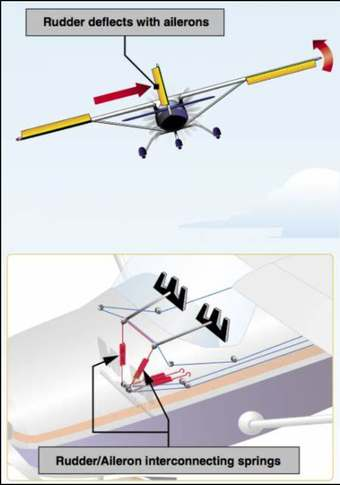
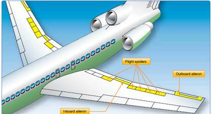
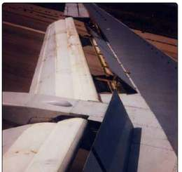

Why the nose swings the wrong way when you roll, and the five ways to stop it.
1
What it is
Adverse yaw is when the aircraft's nose yaws (swings) away from the direction of the roll. Roll right, and the nose first swings left.
It happens around the vertical axis, but it's caused by the ailerons, the roll control. Rolling and yawing are linked.
Aileron · moving surface on the wing's trailing edge; controls rollCamber · the curve of the wing; more camber = more liftInduced drag · drag that comes from making lift; more lift = more induced dragYaw · nose swings left or right around the vertical axisCoordinated turn · roll and rudder used together so the nose follows the turnRising / descending wing · in a roll right, the left wing rises and the right wing descends
2
Try it: the adverse yaw simulator
Turn the control wheel. Watch the lift arrows (blue) on the rear view and the drag arrows (red) on the top view. Then pick a fix and see what changes.
Rear view: ailerons & lift
Top view: drag & where the nose goes
◀ roll LEFTcentreroll RIGHT ▶
Aircraft design
Wings levelMove the control wheel to start a roll.
Simplified teaching model: arrow sizes show the idea, not real values. On a real aircraft the amount of adverse yaw depends on speed, aileron travel and wing design.
3
The cause, step by step
Example: the pilot rolls right.
Aileron movesLeft aileron goes down, right aileron goes up.
Camber changesDown aileron = more camber on the left wing. Up aileron = less camber on the right.
Lift changesLeft wing makes more lift and rises. Right wing makes less and descends. The aircraft rolls right.
Drag follows liftMore lift = more induced drag. The rising left wing now has the most drag.
Wing pulled backThat extra drag pulls the left wingtip backward.
Nose swings leftThe aircraft yaws around the vertical axis: nose goes left, away from the turn.
Short version: the wing that goes up has more drag, and drags the nose toward it. The nose yaws toward the rising wing, which is away from the turn.
4
Effects
Nose swings the wrong way at the start of every turn.
Uncoordinated turn: the aircraft slips sideways through the air; the slip ball moves off centre.
More drag, so it loses speed and turns less efficiently.
Uncomfortable for passengers: they feel pushed sideways.
Worst at low speed and high angle of attack, with large aileron movements, and on long wings.
Safety link: uncoordinated flight near a stall raises the risk of a spin.
Parts of the aircraft involved
AileronsStart it: they change the camber and lift of each wing.WingsMake the uneven lift and drag.Vertical axisThe axis the nose yaws around.RudderThe pilot's fix: yaws the nose back into the turn.Vertical stabilizerDirectional stability resists the yaw, but can't stop all of it.SpoilersOn some aircraft they roll it instead, with no adverse yaw.
5
Real-life examples
The student pilot's first turn
A student turns the wheel left but keeps their feet still. The left wing drops, but the nose first swings right. The slip ball slides to the left (low side). The instructor's fix: "step on the ball": press the left rudder pedal with the left aileron, and the ball centres.
Gliders and the yaw string
Gliders have very long wings, so adverse yaw is strong. Glider pilots tape a short piece of yarn (a yaw string) to the canopy. In a coordinated turn it points straight back. If it blows to one side, the glider is slipping and needs more rudder.
6
The fixes
The pilot's fix on every aircraft: use rudder with aileron (a coordinated turn). Designers also reduce adverse yaw in four ways. Each one adds drag to the descending wing, or takes the extra drag away from the rising wing.
1
Differential ailerons
Simply
The up aileron moves farther than the down aileron.
How
The big up deflection adds drag to the descending wing; the smaller down deflection makes less extra lift (and induced drag) on the rising wing. This balances most, but not all, of the adverse yaw.
Most used
Light, single-engine aircraft. Very common and simple: only the travel stops and linkage differ.
Examples
Cessna 172 (with Frise), Piper PA-28
2
Frise ailerons
Simply
When the aileron goes up, its front edge (nose) dips below the wing into the airflow.
How
The hinge is set back, so the raised aileron's nose sticks out under the descending wing and adds drag there. This balances the drag of the rising wing. It also helps lighten the control forces for the pilot.
Most used
Light aircraft, often together with differential travel.
Examples
Cessna 172 and many other light aircraft
3
Aileron–rudder interconnect

Image: FAA (public domain), as used in the ASYS 245 slides
Simply
Springs link the aileron controls to the rudder, so the rudder moves when the pilot turns the wheel.
How
Roll right → the springs pull the right rudder pedal forward → right rudder cancels the left yaw. The pilot can still overpower the springs.
Most used
Some light single-engine aircraft.
Examples
Beechcraft Bonanza · Ercoupe (fully linked controls, no rudder pedals)
4
Roll spoilers


Images: FAA Aviation Maintenance Technician Handbook: Airframe (public domain), as used in the ASYS 245 slides
Simply
Panels on top of the wing pop up on the wing you want to go down.
How
The raised spoiler spoils lift and adds drag on the descending wing. Drag is now on the same side as the turn, so the nose yaws into the turn, not away from it.
Most used
Large jets, usually working with the ailerons. Frees up the wing's trailing edge for bigger flaps.
Examples
Boeing 737 and 747 (flight spoilers help the ailerons) · Mitsubishi MU-2 (spoilers only, no ailerons)
7
Compare the fixes
Fix
What it does
Which wing gets drag
Pros
Cons
Typical aircraft
Rudder (pilot)
Pilot yaws the nose into the turn
—
Works on every aircraft
Pilot must remember; skill needed
All
Differential
Up aileron moves farther than down
Descending
Simple, light
Reduces but doesn't remove it
Light singles
Frise
Raised aileron's nose dips into the airflow
Descending
Also lightens control forces
Reduces but doesn't remove it
Light singles
Interconnect
Springs move the rudder with the ailerons
— (rudder fixes it)
Automatic coordination
Extra parts; pilot can override
Bonanza, Ercoupe
Roll spoilers
Spoiler rises on the descending wing
Descending
No adverse yaw; room for big flaps
More complex systems
Large jets, MU-2
Connections: camber and induced drag come from Module 2 (Lift & Drag). Ailerons, spoilers and rigging are covered in Module 4 (Flight Controls). A yaw damper is a different system: it stops Dutch roll.
8
Check yourself
Sources: SAIT ASYS 245 Module 3 slides (Jeppesen Airframe Technician pp. 1-23 to 1-26) and SAFA class notes; FAA Pilot's Handbook of Aeronautical Knowledge (FAA-H-8083-25, Ch. 5–6) and Aviation Maintenance Technician Handbook: Airframe (FAA-H-8083-31, Ch. 1). Always follow the aircraft's own maintenance manual.